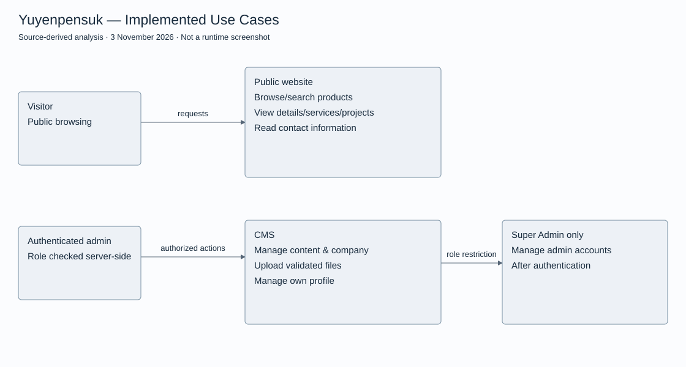
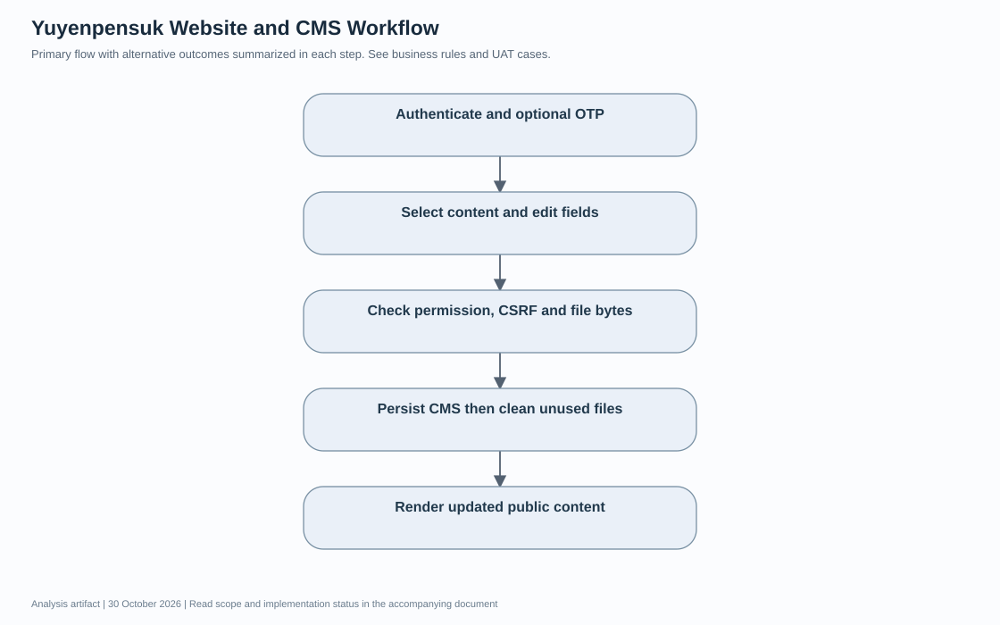
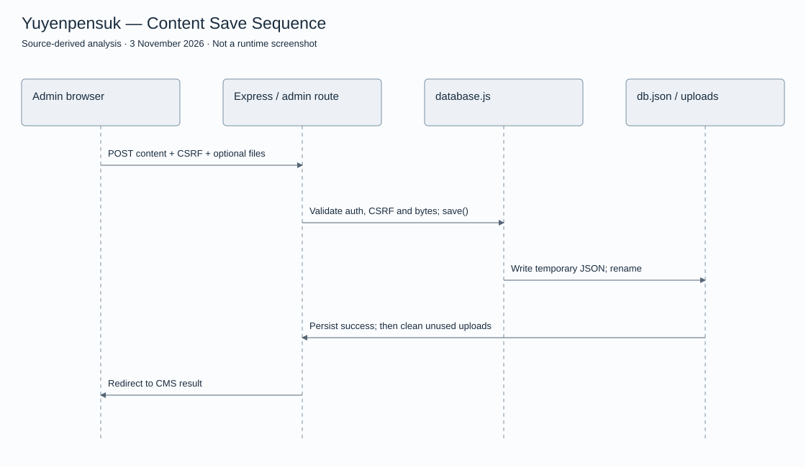
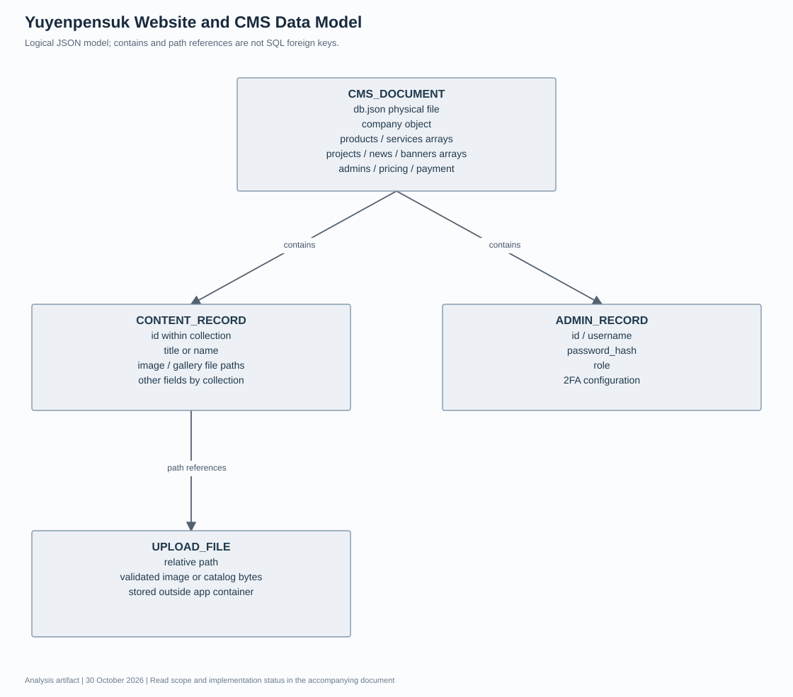

Yuyenpensuk — Requirements & Design Review
This document was prepared from repository source and read-only browser observations. It is not a retrospective interview transcript, stakeholder approval or signed UAT result.
Business requirements and scope
Provide a public product/service catalogue and a CMS so authorized staff can maintain company content. The owner discussion and delivery history are supplied by the portfolio owner. No meeting minutes or signed requirements were available for independent verification.
Public browsing, content management and file uploads are in scope. Checkout, payment processing, inventory ledgers and installation scheduling are outside the implemented scope reviewed here.
Software requirements and traceability
| ID | Requirement / acceptance condition | Source | Verification |
|---|---|---|---|
| FR01 | Visitors can browse catalogue and product details without an admin session. | routes/site.js, views/site/ | Read-only production pages observed |
| FR02 | Content management requires an authenticated admin session. | middleware/auth.js, routes/admin.js | Source inspected; authenticated runtime NOT TESTED |
| FR03 | Admin-account management requires the superadmin role. | middleware/auth.js, routes/admin.js | Source inspected; role enforcement runtime NOT TESTED |
| FR04 | Multipart saves validate CSRF, allowed extension, size and file signatures. | routes/admin.js | Source inspected; uploads NOT TESTED |
| FR05 | CMS content is persisted to JSON with temporary-file write and rename. | database.js | Source inspected; restart/persistence NOT TESTED |
| FR06 | When enabled for an account, OTP is required before the session becomes authenticated. | routes/admin.js | Source inspected; 2FA NOT TESTED |
| FR07 | Public and admin hosts route to separate Express apps with shared storage. | deploy-server.js | Source inspected; live source/deployed build equivalence NOT VERIFIED |
Solution design
Express renders EJS templates. deploy-server.js dispatches by hostname. database.js reads db.json from DATA_DIR, while UPLOAD_DIR stores files. Password verification uses bcrypt; account-enabled OTP uses otplib. These are code observations, not a security certification.

Business workflow / activity overview

Normal flow: authenticate → select content → submit fields and files → validate → persist → display updated public content. Validation or storage failure must not be reported as a successful save.
Sequence design

Mermaid sourceData model

This is a logical JSON model, not a relational SQL ERD. Company and content collections, admin records and file-path references are stored without SQL foreign-key constraints.
User stories and acceptance criteria
- As a visitor, I want to open a product by ID so I can inspect its details. Acceptance: existing ID returns its details; an unknown ID returns the implemented not-found response.
- As an authorized editor, I want to update company content without editing EJS. Acceptance: a valid authenticated request with valid CSRF and permitted files persists the submitted fields; invalid requests must not report success.
- As a superadmin, I want account management restricted by role. Acceptance: an authenticated non-superadmin receives HTTP 403 and no account mutation occurs.
API / endpoint catalogue
These are HTML form routes and internal image endpoints, not a versioned public REST API contract.
| Method / path | Purpose | Access |
|---|---|---|
| GET /products; /products/:id | Catalogue / detail | Public |
| GET /services; /projects | Service / project pages | Public |
| GET, POST /admin/login | Render login / verify password | Unauthenticated |
| GET, POST /admin/otp | Account-enabled OTP | Pending sign-in |
| GET /admin | Dashboard | Authenticated |
| GET, POST /admin/company | Company page / save | Authenticated + CSRF on write |
| POST /admin/products/save | Create / update product | Authenticated + multipart validation |
| POST /admin/products/delete/:id | Delete product | Authenticated + CSRF |
| GET /admin/api/product-gallery/:id | Image metadata | Authenticated |
| GET /admin/api/product-image/:id/:index | Image bytes | Authenticated |
| GET /admin/admins; POST /admin/admins/save | Account management | Superadmin |
UAT test design — NOT EXECUTED
Proposed cases: product search and unknown ID; editor denied admin-account management; invalid file signature rejected; invalid CSRF rejected; saved content visible after restart; OTP required when enabled; failed storage does not remove referenced images. These are acceptance scenarios, not passed results or user sign-off.
Observed validation and limitations
Six real browser captures are available: homepage, catalogue, product detail, services, projects and admin login. Two security-header unit tests passed in this review. No production data was changed. Dashboard, content-management screens, uploads, permission checks, OTP and restart persistence remain untested because no authenticated session was available.
Production catalogue/projects contain Test/test entries. Existing seeded stock content in source and claims inside a page capture do not establish customer delivery history, sales or installation statistics.